Défense de village
Repoussez une attaque et protégez les habitants ou les installations menacées.
Aventures, coopération et récompenses
Découvrez toutes les expériences disponibles en jeu, leur fonctionnement, leurs conditions et les récompenses que les plus courageux pourront obtenir.
Choisir une activité
Toutes les possibilités
Chaque activité possède son propre rythme. Les statuts indiquent ce qui est disponible, annoncé ou encore à venir.
Une intrigue globale qui fera évoluer durablement le monde.
Consulter →Des rendez-vous communs aux six royaumes.
Consulter →Livraisons et défenses de caravanes accessibles en jeu.
Consulter →Traquez une cible et rapportez son contrat.
Consulter →Salles de combat, parcours, boss et coffres de rareté.
Consulter →Des menaces signalées lorsqu’elles apparaissent sur la carte.
Consulter →Intrigue globale
La première saison n’a pas encore commencé. Son intrigue, ses ennemis et ses récompenses seront dévoilés prochainement.
Bientôt disponibleRendez-vous communautaires
Les événements sont des activités communes accessibles à tous les royaumes. Ils animent régulièrement le monde sans dépendre de l’intrigue principale d’une saison.
Leur date, leur lieu et leurs conditions de participation sont annoncés sur Discord afin que chaque royaume puisse s’organiser.
Repoussez une attaque et protégez les habitants ou les installations menacées.
Participez aux rassemblements, cérémonies et moments de vie organisés dans le monde.
Enquêtes, rencontres et situations ponctuelles peuvent apparaître au fil de la semaine.
Missions accessibles en jeu
Transportez de précieuses cargaisons entre les villages et recevez une récompense pour chaque livraison réussie.
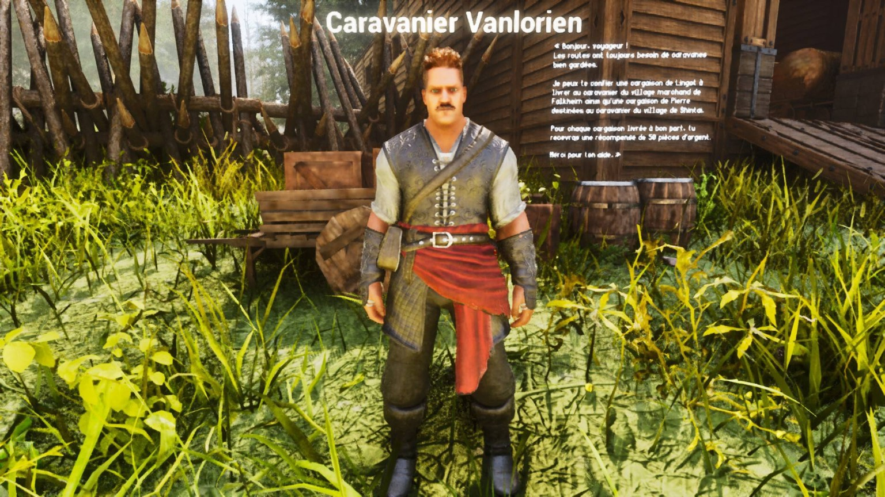
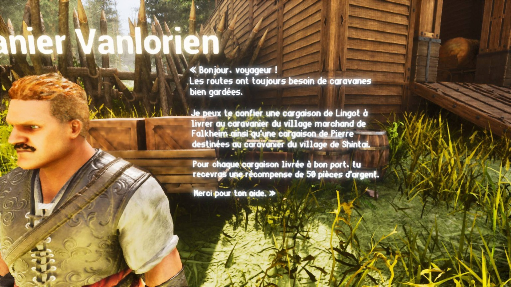
Consultez le texte affiché près du Caravanier pour connaître les cargaisons disponibles et leurs villages de destination.
Interagissez avec le PNJ. Chaque cargaison pèse 1 000 unités : prévoyez une capacité de transport suffisante.
Transportez la cargaison jusqu’au village indiqué. Préparez votre monture et choisissez votre route avec soin.
Trouvez le Caravanier du village d’arrivée, interagissez avec lui et remettez-lui la cargaison.
Une cargaison de lingots destinée à Falkheim doit être conservée dans votre inventaire jusqu’au Caravanier du village marchand de Falkheim.
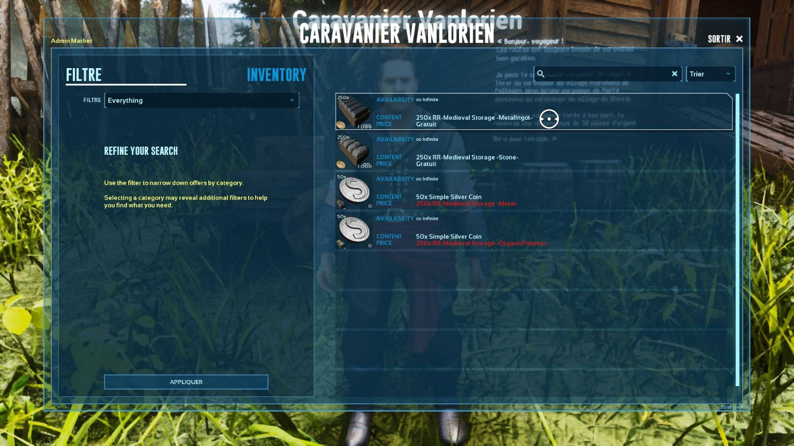
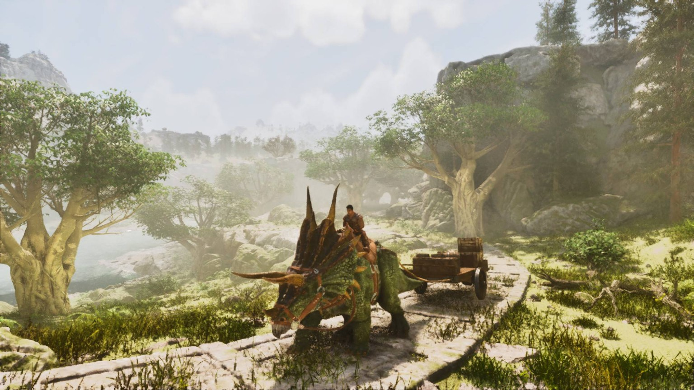
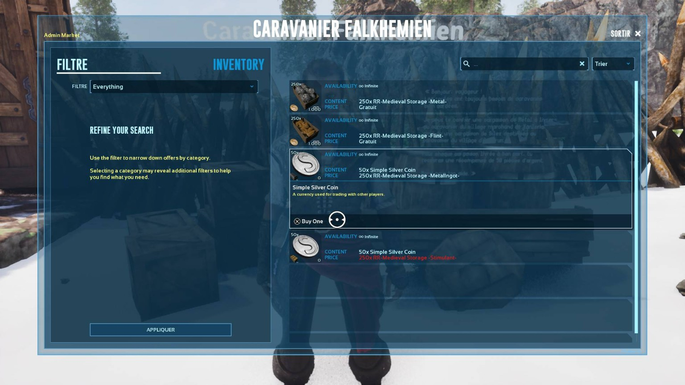
Des bandits attaquent les convois afin de piller leurs cargaisons. Éliminez-les, sécurisez la route puis parlez au Caravanier sauvé.
Deux emplacements différents existent dans chaque royaume.
Affrontez tous les ennemis présents autour de la caravane.
Annoncez que la route est sûre et récupérez votre récompense.
Attention Une fois la limite de quatre récompenses atteinte, le Caravanier n’en distribuera plus jusqu’au lendemain.
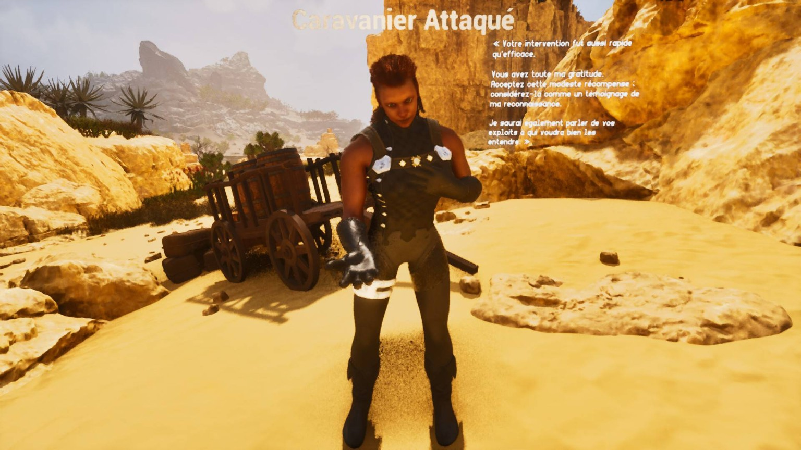
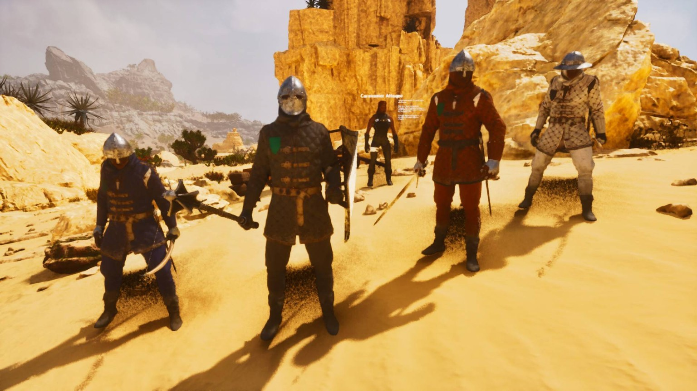
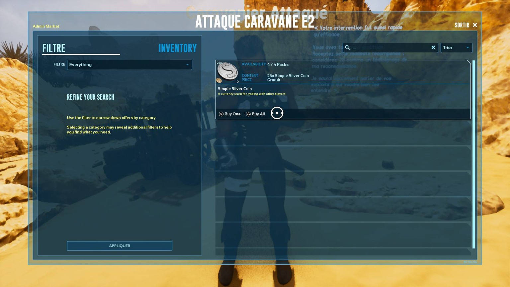
Contrats plusieurs fois par semaine
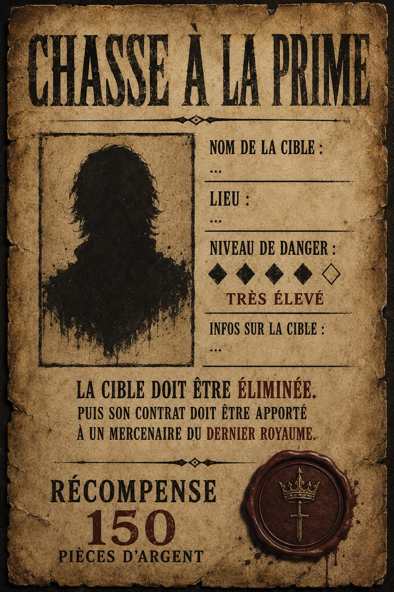
De dangereux individus parcourent les terres. Des contrats sont régulièrement proposés aux survivants assez courageux pour partir à leur recherche.
Le nom de la cible, des indices et une zone de recherche sont publiés sur Discord. La position exacte n’est pas toujours révélée.
Explorez, analysez les indices puis affrontez la cible et les ennemis qui la protègent.
Fouillez son corps pour obtenir le Contrat de Prime et les éventuels objets rares. Ne perdez pas le contrat.
Apportez le contrat au Mercenaire d’un village marchand et vendez-le pour prouver l’élimination.
Seul le joueur en possession du Contrat de Prime peut l’échanger. D’autres survivants peuvent poursuivre la même cible : soyez les premiers.
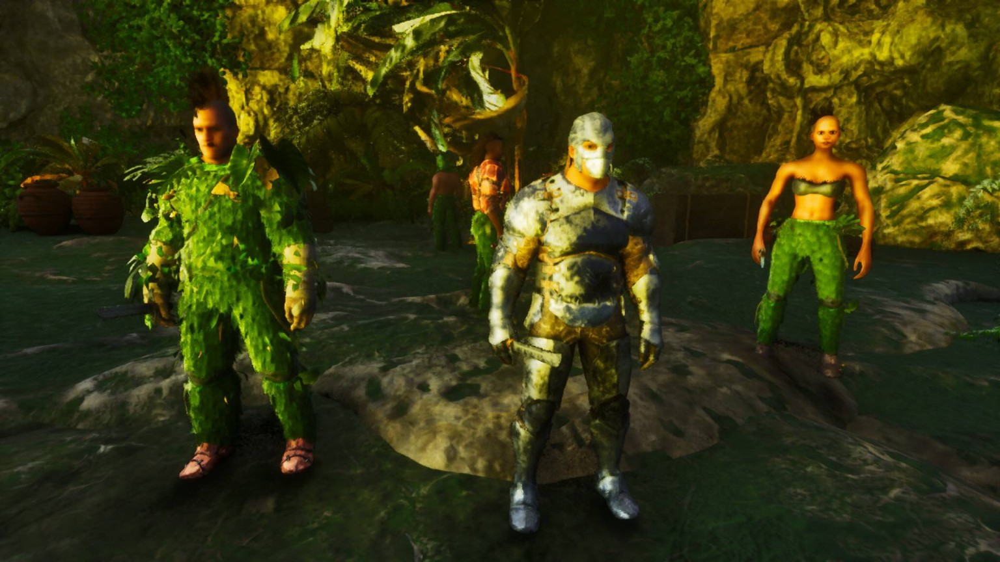
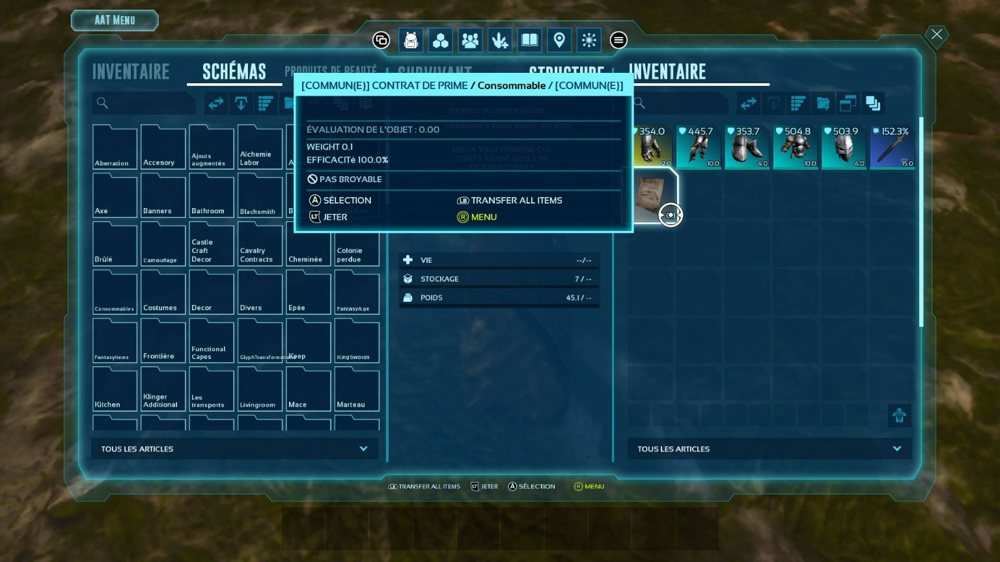
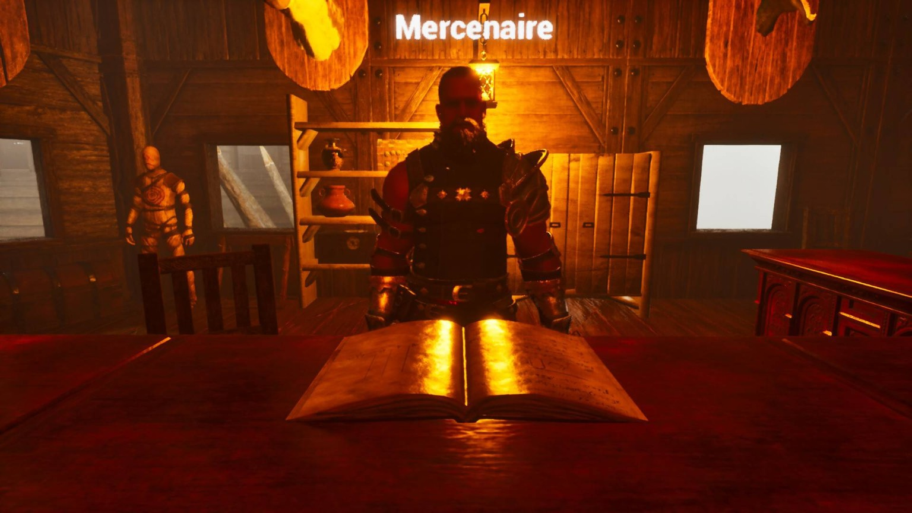
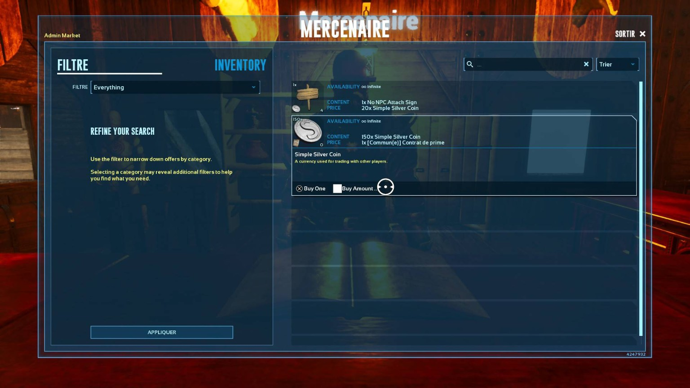
Défi en rotation hebdomadaire
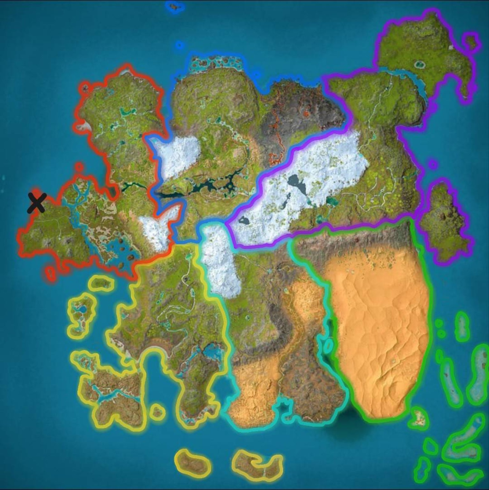
Arrivez quelques minutes en avance afin que tous les participants puissent entrer ensemble.
Faction présente : L’Empire Déchu. Les participants et la faction changent selon la rotation.
Éliminez les adversaires pour progresser à travers le chemin principal.
Mettez votre agilité et votre coordination à l’épreuve.
Affrontez les ennemis les plus puissants du donjon.
Prenez davantage de risques pour obtenir plus de récompenses.
Coffres et raretés
Coffre rouge Le coffre le plus rare et le plus précieux ne peut être obtenu qu’après avoir vaincu le boss final.
Menaces présentes sur la carte
Lorsqu’un boss apparaît sur la carte, une alerte indique sa présence et transmet les informations nécessaires aux joueurs. Les détails dépendent de la menace en cours.
L’annonce confirme qu’un boss est actif dans le monde.
La zone, le danger ou les conditions utiles sont communiqués sur Discord.
Les joueurs et royaumes peuvent ensuite préparer leur intervention.
Votre prochaine aventure
Les activités quotidiennes, hebdomadaires et événementielles permettent à chaque joueur de contribuer à la vie du monde.